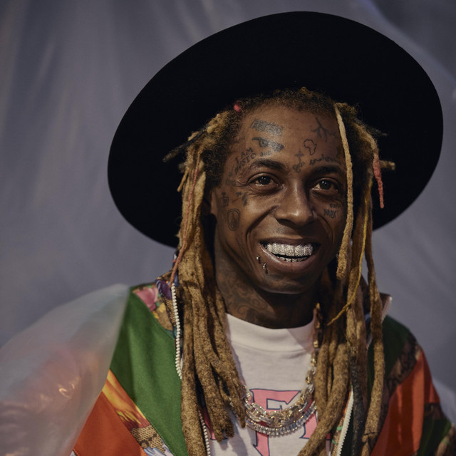

LIL WAYNE

Wayne obecnie odszedł nieco w cień jednak wciąż pojawia się w gościnnych numerach bardziej aktualnych twórców takich jak: Metro Boomin, Tyler The Creator lub Kanye West.
Ważne linki
Inni równie ważni artyści
- Tupac
- Biggie
- Nas
- Dr Dre
- Snoop Dogg
- 50 cent
- Drake
- 21 Savage
Najważniejsi Polscy Artyści i grupy
- Peja i Tede
- Bedoes i Filipek
- Quebonafide i Taco Hemingway
- Solar i Białas
- Paktofonika i Kaliber 44
- Molesta i Hemp Gru
- Gang Albani i Ganja Mafia
- Belmondo i Kaz Bałagane
KANYE WEST

Kanye obecnie słynie z jego kontrowersyjnych wywiadów, ubioru oraz nietypowych promocji swoich projektów. Nadal jego premiery są jednymi z najgłośniejszych i najbardziej oczekiwanych.
EMINEM

Eminem w czasach swojej świetności słynął z niesamowitej liryki, techniki oraz wpływu na muzykę. Jest on również jednym z niewielu tak popularnych raperów o białej karnacji.